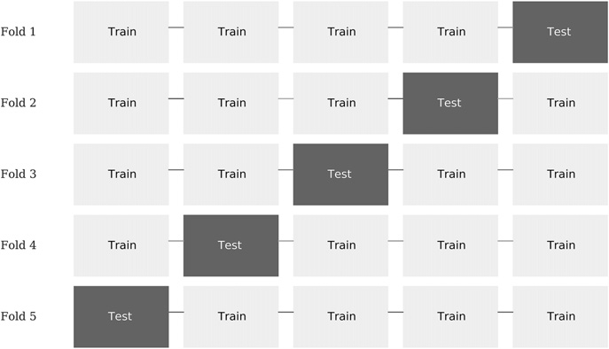
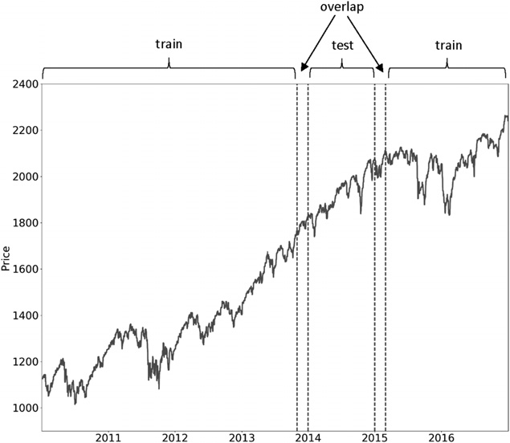
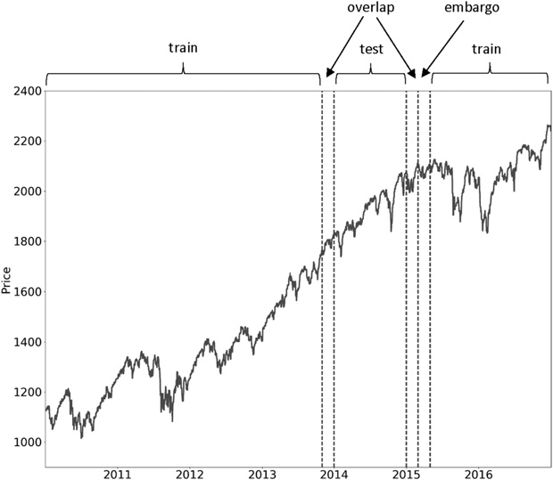

第二部分：建模
金融领域的交叉验证
7.1 动机
交叉验证（CV）的作用，是估计 ML 算法面对未见数据时的泛化误差，从而防止过拟合。然而，把标准 ML 技术直接用于金融问题时，交叉验证同样可能失效：过拟合已经发生，CV 却识别不出来；更糟的是，用 CV 调整超参数本身还会助长过拟合。本章将解释标准 CV 为什么在金融中失效，以及如何解决这个问题。
7.2 交叉验证的目标
ML 的目标之一，是学到数据背后的通用结构，以便对未来从未见过的特征作出预测。如果用训练模型的同一份数据测试模型，结果自然会非常漂亮。但这种用法下的 ML 算法，与有损文件压缩算法没有本质区别：它能高度精确地概括已有数据，却完全没有预测能力。
CV 把来自独立同分布（IID）过程的观测划分为训练集和测试集。完整数据集中的每个观测只能属于其中一个集合。这样做是为了防止信息从一个集合泄漏到另一个集合，否则在未见数据上测试就失去了意义。更多细节可参阅参考文献中列出的书籍和文章。
交叉验证有多种方案，其中最常用的一种是 \(k\)折交叉验证。图 7.1 展示了采用 \(k\)折交叉验证时得到的 \(k\)组训练集/测试集划分，其中 \(k=5\)。具体步骤如下：
- 把数据集划分为 \(k\)个子集。
- 对于 \(i=1,\ldots,k\)：
- 训练 ML 算法时，唯一不使用的子集是 \(i\)。
- 训练完成后，用来测试该 ML 算法的子集是 \(i\)。

采用 \(k\)折交叉验证会得到一个 \(k\times1\)的交叉验证性能指标数组。例如，对二分类器而言，如果交叉验证准确率高于 \(\frac{1}{2}\)，就可以认为模型学到了有效规律，因为随机抛一枚正反面概率各半的硬币，也只能达到这一准确率。
在金融领域，CV 通常用于两类场景：模型开发（如超参数调优）和回测。回测是一个复杂主题，第 10～16 章会详细讨论。本章只关注模型开发中的 CV。
7.3 为什么 K 折 CV 在金融中会失效
你可能已经读过不少金融论文，其中用 \(k\)折交叉验证来证明某个 ML 算法表现良好。遗憾的是，这些结果几乎肯定有误。\(k\)折交叉验证在金融中失效的第一个原因，是不能假定观测来自 IID 过程。第二个原因是，模型开发过程中会多次使用测试集，因而产生多重检验和选择偏差。第 11～13 章会重新讨论第二个原因；这里先只分析第一个原因。
当训练集包含了同样出现在测试集中的信息时，就发生了信息泄漏。考虑一个存在序列相关性的特征 \(X\)，它对应的标签 \(Y\)由相互重叠的数据生成：
- 由于存在序列相关性，\(X_t\approx X_{t+1}\)。
- 由于标签来自相互重叠的数据点，\(Y_t\approx Y_{t+1}\)。
把 \(t\)和 \(t+1\)分到不同集合，就会造成信息泄漏。假设分类器先在 \((X_t,Y_t)\)上训练，然后要求它预测 \(\mathbb{E}[Y_{t+1}\mid X_{t+1}]\)，依据的观测特征是 \(X_{t+1}\)。这样，分类器更容易得到 \(Y_{t+1}=\mathbb{E}[Y_{t+1}\mid X_{t+1}]\)这一正确结果，即使 \(X\)其实是无关特征。
如果 \(X\)确实具有预测力，信息泄漏只会让一个原本有效的策略显得更好。真正危险的是无关特征存在时的泄漏，因为它会带来虚假发现。至少可以用以下两种方法降低泄漏概率：
- 从训练集中剔除观测 \(i\)，其中 \(Y_i\)由同样用于确定 \(Y_j\)的信息决定，而观测 \(j\)属于测试集。
- 例如，标签 \(Y_i\)和 \(Y_j\)不应跨越相互重叠的时间区间（样本唯一性见第 4 章）。
- 避免分类器过拟合。这样，即使出现少量信息泄漏，分类器也无法利用它获利。可采用以下方法：
- 让基估计器提前停止（见第 6 章）。
- 对分类器采用 bagging，并控制冗余样本的过度抽样，使各个分类器尽可能多样化。
- 将
max_samples设为平均唯一性。 - 采用序贯自助法（第 4 章）。
- 将
考虑以下情况：特征 \(X_i\)和 \(X_j\)基于有重叠的信息形成，其中观测 \(i\)属于训练集，观测 \(j\)属于测试集。这一定算信息泄漏吗？不一定。只要标签 \(Y_i\)和 \(Y_j\)相互独立，就不构成泄漏。要发生泄漏，必须满足 \((X_i,Y_i)\approx(X_j,Y_j)\)；而以下任一条件都不够：\(X_i\approx X_j\)，或 \(Y_i\approx Y_j\)。
7.4 解决方案：清除式 K 折 CV
减少信息泄漏的一种方法，是从训练集中清除所有标签时间区间与测试集标签重叠的观测。我把这一过程称为“清除重叠样本（purging）”。此外，金融特征常包含具有序列相关性的序列（如 ARMA 过程），所以还应从训练集中剔除紧跟在测试观测之后的观测。我把这段隔离称为“禁运期（embargo）”。
7.4.1 清除训练集中的重叠样本
假设测试集中的一个观测，其标签 \(Y_j\)由信息集 \(\Phi_j\)决定。为防止上一节所述的信息泄漏，只要某个观测的标签 \(Y_i\)由信息集 \(\Phi_i\)决定，并满足以下条件，就要把该观测从训练集中清除：\(\Phi_i\cap\Phi_j\ne\emptyset\)。
具体来说，只要两个观测 \(i\)和 \(j\)的标签 \(Y_i\)和 \(Y_j\)在时间上有重叠（见第 4 章第 4.3 节），我们就认为它们存在信息重叠。这里的“重叠”是指两个标签至少依赖同一次随机抽样。例如，设标签 \(Y_j\)取决于闭区间内的观测 \(t\in[t_{j,0},t_{j,1}]\)，\(Y_j=f[[t_{j,0},t_{j,1}]]\) （这里略微借用了记号）。在三重障碍标签法（第 3 章）中，这表示该标签就是以价格条 \(t_{j,0}\)和 \(t_{j,1}\)为起止点的收益率符号，即 \(\operatorname{sgn}[r_{t_{j,0},t_{j,1}}]\)。标签 \(Y_i=f[[t_{i,0},t_{i,1}]]\)与 \(Y_j\)重叠，只要以下三个充分条件中的任一个成立：
- \(t_{j,0}\le t_{i,0}\le t_{j,1}\)
- \(t_{j,0}\le t_{i,1}\le t_{j,1}\)
- \(t_{i,0}\le t_{j,0}\le t_{j,1}\le t_{i,1}\)
代码清单 7.1 实现了从训练集中清除这些观测的过程。如果测试集在时间上连续，即首个与最后一个测试观测之间不存在训练观测，就可以加快清除过程：此时 testTimes可以是只有一个元素的 pandas Series，该元素的时间区间覆盖整个测试集。
def getTrainTimes(t1,testTimes):
'''
Given testTimes, find the times of the training observations.
-t1.index: Time when the observation started.
-t1.value: Time when the observation ended.
-testTimes: Times of testing observations.
'''
trn=t1.copy(deep=True)
for i,j in testTimes.iteritems():
df0=trn[(i<=trn.index)&(trn.index<=j)].index # train starts within test
df1=trn[(i<=trn)&(trn<=j)].index # train ends within test
df2=trn[(trn.index<=i)&(j<=trn)].index # train envelops test
trn=trn.drop(df0.union(df1).union(df2))
return trn发生信息泄漏时，若令 \(k\to T\)，其中 \(T\)是数据条的数量，性能就会提高。原因是，测试划分越多，训练集中与测试集重叠的观测也越多。很多情况下，仅清除重叠样本就足以防止泄漏：随着 \(k\)增大，性能会提高，因为模型可以更频繁地重新校准。但当超过某个值 \(k^*\)后，性能将不再提高，这说明回测没有从信息泄漏中获利。图 7.2 展示了 \(k\)折 CV 的一次划分。测试集两侧各有一个训练集，形成两处重叠；必须清除这些重叠才能避免信息泄漏。

7.4.2 禁运期（embargo）
如果清除重叠样本仍无法杜绝信息泄漏，可以对每个测试集之后的训练观测设置禁运期。测试集之前的训练观测无需禁运，因为训练标签 \(Y_i=f[[t_{i,0},t_{i,1}]]\)，其中 \(t_{i,1}<t_{j,0}\) （即训练在测试开始前结束），只使用截至测试时点 \(t_{j,0}\)已经可用的信息。换句话说，我们只需要关注紧接在测试集之后的训练标签 \(Y_i=f[[t_{i,0},t_{i,1}]]\)，也就是 \(t_{j,1}\le t_{i,0}\le t_{j,1}+h\)。可以把禁运期 \(h\)写入标签区间：先令 \(Y_j=f[[t_{j,0},t_{j,1}+h]]\)，再执行清除。通常只需设置较小的 \(h\approx.01T\)就能防止所有信息泄漏。可以这样验证：当 \(k\to T\)时，性能不会继续提高。图 7.3 展示了如何对测试集之后紧邻的训练观测设置禁运期。代码清单 7.2 实现了相应逻辑。

def getEmbargoTimes(times,pctEmbargo):
# Get embargo time for each bar
step=int(times.shape[0]*pctEmbargo)
if step==0:
mbrg=pd.Series(times,index=times)
else:
mbrg=pd.Series(times[step:],index=times[:-step])
mbrg=mbrg.append(pd.Series(times[-1],index=times[-step:]))
return mbrg
#---------------------------------------
testTimes=pd.Series(mbrg[dt1],index=[dt0]) # include embargo before purge
trainTimes=getTrainTimes(t1,testTimes)
testTimes=t1.loc[dt0:dt1].index7.4.3 清除式 K 折交叉验证类
前几节讨论了标签重叠时如何划分训练集和测试集，并在模型开发场景中引入了清除重叠样本和设置禁运期的概念。一般来说，每次划分训练集/测试集时，无论是为了拟合超参数、回测还是评估性能，都需要对重叠的训练观测执行清除和禁运期处理。代码清单 7.3 扩展了 scikit-learn 的 KFold类，用来防止测试信息泄漏到训练集。
class PurgedKFold(_BaseKFold):
'''
Extend KFold class to work with labels that span intervals
The train is purged of observations overlapping test-label intervals
Test set is assumed contiguous (shuffle=False), w/o training samples in between
'''
def __init__(self,n_splits=3,t1=None,pctEmbargo=0.):
if not isinstance(t1,pd.Series):
raise ValueError('Label Through Dates must be a pd.Series')
super(PurgedKFold,self).__init__(n_splits,shuffle=False,random_state=None)
self.t1=t1
self.pctEmbargo=pctEmbargo
def split(self,X,y=None,groups=None):
if (X.index==self.t1.index).sum()!=len(self.t1):
raise ValueError('X and ThruDateValues must have the same index')
indices=np.arange(X.shape[0])
mbrg=int(X.shape[0]*self.pctEmbargo)
test_starts=[(i[0],i[-1]+1) for i in \
np.array_split(np.arange(X.shape[0]),self.n_splits)]
for i,j in test_starts:
t0=self.t1.index[i] # start of test set
test_indices=indices[i:j]
maxT1Idx=self.t1.index.searchsorted(self.t1[test_indices].max())
train_indices=self.t1.index.searchsorted(self.t1[self.t1<=t0].index)
if maxT1Idx<X.shape[0]:
# right train (with embargo)
train_indices=np.concatenate((train_indices,indices[maxT1Idx+mbrg:]))
yield train_indices,test_indices7.5 sklearn 交叉验证中的缺陷
交叉验证如此关键，你也许会以为最流行的 ML 库之一必定把它实现得毫无问题。可惜事实并非如此。这也是为什么凡是要运行的代码都应通读一遍，同时也体现了开源的价值。开源代码的一大优点，就是可以逐项核验并按需要修改。代码清单 7.4 处理了 sklearn 中两个已知缺陷：
- 评分函数无法识别
classes_，原因是 sklearn 使用numpy数组，而非pandasSeries：https://github.com/scikit-learn/scikit-learn/issues/6231 cross_val_score会产生不同结果，因为它把权重传给fit方法，却没有传给log_loss方法：https://github.com/scikit-learn/scikit-learn/issues/9144
def cvScore(clf,X,y,sample_weight,scoring='neg_log_loss',t1=None,cv=None,cvGen=None,
pctEmbargo=None):
if scoring not in ['neg_log_loss','accuracy']:
raise Exception('wrong scoring method.')
from sklearn.metrics import log_loss,accuracy_score
from clfSequential import PurgedKFold
if cvGen is None:
cvGen=PurgedKFold(n_splits=cv,t1=t1,pctEmbargo=pctEmbargo) # purged
score=[]
for train,test in cvGen.split(X=X):
fit=clf.fit(X=X.iloc[train,:],y=y.iloc[train],
sample_weight=sample_weight.iloc[train].values)
if scoring=='neg_log_loss':
prob=fit.predict_proba(X.iloc[test,:])
score_=-log_loss(y.iloc[test],prob,
sample_weight=sample_weight.iloc[test].values,labels=clf.classes_)
else:
pred=fit.predict(X.iloc[test,:])
score_=accuracy_score(y.iloc[test],pred,sample_weight= \
sample_weight.iloc[test].values)
score.append(score_)
return np.array(score)请注意，这些缺陷从形成修复方案，到完成实现、测试和发布，可能需要很长时间。在此之前，应使用代码清单 7.4 中的 cvScore，并避免运行函数 cross_val_score。
参考书目
- Bharat Rao, R., G. Fung, and R. Rosales (2008): “On the dangers of cross-validation: An experimental evaluation.” White paper, IKM CKS Siemens Medical Solutions USA. Available at http://people.csail.mit.edu/romer/papers/CrossVal_SDM08.pdf.
- Bishop, C. (1995): Neural Networks for Pattern Recognition, 1st ed. Oxford University Press.
- Breiman, L. and P. Spector (1992): “Submodel selection and evaluation in regression: The X-random case.” White paper, Department of Statistics, University of California, Berkeley. Available at http://digitalassets.lib.berkeley.edu/sdtr/ucb/text/197.pdf.
- Hastie, T., R. Tibshirani, and J. Friedman (2009): The Elements of Statistical Learning, 1st ed. Springer.
- James, G., D. Witten, T. Hastie and R. Tibshirani (2013): An Introduction to Statistical Learning, 1st ed. Springer.
- Kohavi, R. (1995): “A study of cross-validation and bootstrap for accuracy estimation and model selection.” International Joint Conference on Artificial Intelligence. Available at http://web.cs.iastate.edu/~jtian/cs573/Papers/Kohavi-IJCAI-95.pdf.
- Ripley, B. (1996): Pattern Recognition and Neural Networks, 1st ed. Cambridge University Press.